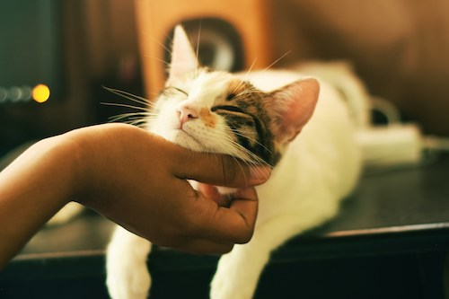
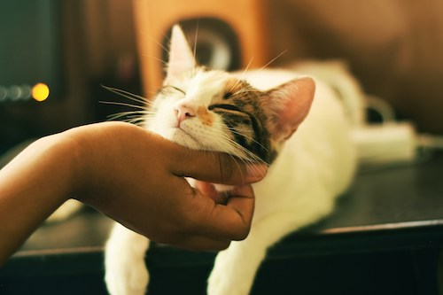

Cats are Cool!
Cats are the coolest pet. Cats are independent and don't need as much attention as dogs. Cats are quiet and don't bark and make noise like dogs do. They are much easier to take care of than dogs
Photo by Yerlin Matu on Unsplash
Cats are the coolest pet. Cats are independent and don't need as much attention as dogs. Cats are quiet and don't bark and make noise like dogs do. They are much easier to take care of than dogs
